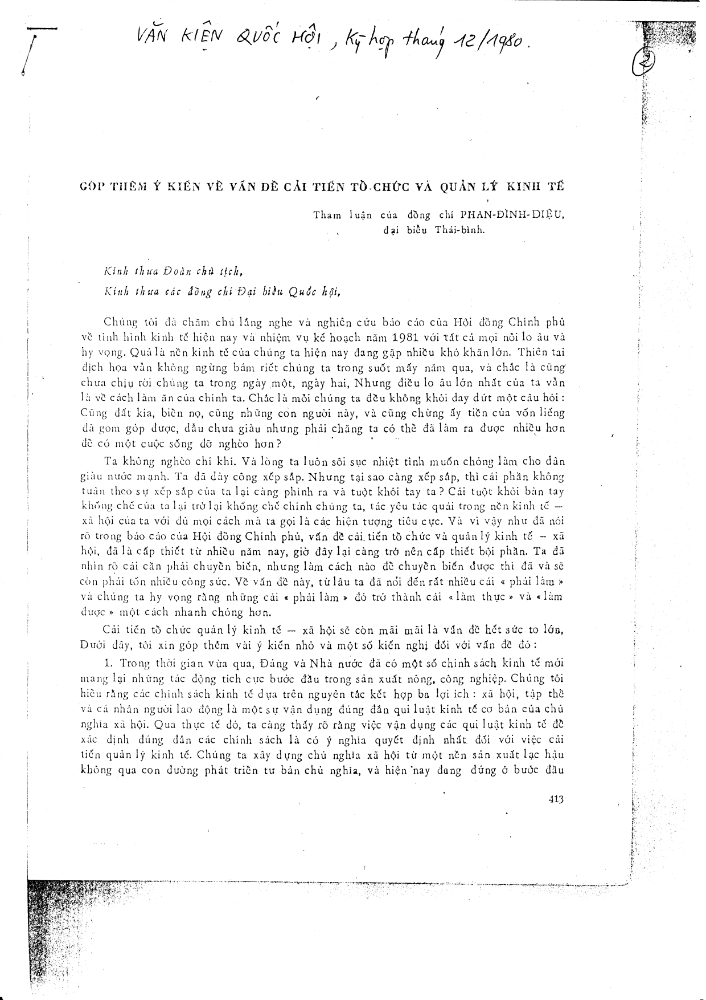

Tham luận tại Quốc Hội 12/1980: Góp thêm ý kiến về vấn đề cải tiến tổ chức và quản lý kinh tế
Tham luận của đồng chí PHAN – ĐÌNH – DIỆU
đại biểu Thái – bình.
Văn kiện Quốc hội, Kỳ họp tháng 12/1980, trang 413–416.

Lời dẫn – Đây là tham luận của ông Phan Đình Diệu tại kỳ họp Quốc hội tháng 12/1980 – phiên họp cũng thông qua Hiến pháp 1980. Cùng với tham luận năm 1978, đây là một trong những phát biểu nền tảng hình thành tư duy hệ thống của ông, trực tiếp dẫn tới công trình nghiên cứu chuyên sâu Khoa học hệ thống và vấn đề cải tiến quản lý kinh tế (1981).
Kính thưa Đoàn chủ tịch,
Kính thưa các đồng chí Đại biểu Quốc hội,
Chúng tôi đã chăm chú lắng nghe và nghiên cứu báo cáo của Hội đồng Chính phủ về tình hình kinh tế hiện nay và nhiệm vụ kế hoạch năm 1981 với tất cả mọi nỗi lo âu và hy vọng. Quả là nền kinh tế của chúng ta hiện nay đang gặp nhiều khó khăn lớn. Thiên tai dịch họa vẫn không ngừng bám riết chúng ta trong suốt mấy năm qua, và chắc là cũng chưa chịu rời chúng ta trong ngày một, ngày hai. Nhưng điều lo âu lớn nhất của ta vẫn là về cách làm ăn của chính ta. Chắc là mỗi chúng ta đều không khỏi day dứt một câu hỏi: Cùng đất kia, biển nọ, cùng những con người này, và cũng chừng ấy tiền của vốn liếng đã gom góp được, dẫu chưa giàu nhưng phải chăng ta có thể đã làm ra được nhiều hơn để có một cuộc sống đỡ nghèo hơn?
Ta không nghèo chí khí. Và lòng ta luôn sôi sục nhiệt tình muốn chống làm cho dân giàu nước mạnh. Ta đã dày công xếp sắp. Nhưng tại sao càng xếp sắp, thì cái phần không tuân theo sự xếp sắp của ta lại càng phình ra và tuột khỏi tay ta? Cái tuột khỏi bàn tay khống chế của ta lại trở lại khống chế chính chúng ta, tác yêu tác quái trong nền kinh tế – xã hội của ta với đủ mọi cách mà ta gọi là các hiện tượng tiêu cực. Và vì vậy như đã nói rõ trong báo cáo của Hội đồng Chính phủ, vấn đề cải tiến tổ chức và quản lý kinh tế – xã hội, đã là cấp thiết từ nhiều năm nay, giờ đây lại càng trở nên cấp thiết bội phần. Ta đã nhìn rõ cái cần phải chuyển biến, nhưng làm cách nào để chuyển biến được thì đã và sẽ còn phải tốn nhiều công sức. Về vấn đề này, từ lâu ta đã nói đến rất nhiều cái "phải làm" và chúng ta hy vọng rằng những cái "phải làm" đó trở thành cái "làm thực" và "làm được" một cách nhanh chóng hơn.
Cải tiến tổ chức quản lý kinh tế – xã hội sẽ còn mãi mãi là vấn đề hết sức to lớn. Dưới đây, tôi xin góp thêm vài ý kiến nhỏ và một số kiến nghị đối với vấn đề đó:
1. Vận dụng quy luật kinh tế và nghiên cứu cơ bản
Trong thời gian vừa qua, Đảng và Nhà nước đã có một số chính sách kinh tế mới mang lại những tác động tích cực bước đầu trong sản xuất nông, công nghiệp. Chúng tôi hiểu rằng các chính sách kinh tế dựa trên nguyên tắc kết hợp ba lợi ích: xã hội, tập thể và cá nhân người lao động là một sự vận dụng đúng đắn quy luật kinh tế cơ bản của chủ nghĩa xã hội. Qua thực tế đó, ta càng thấy rõ rằng việc vận dụng các quy luật kinh tế để xác định đúng đắn các chính sách là có ý nghĩa quyết định nhất đối với việc cải tiến quản lý kinh tế. Chúng ta xây dựng chủ nghĩa xã hội từ một nền sản xuất lạc hậu không qua con đường phát triển tư bản chủ nghĩa, và hiện nay đang đứng ở bước đầu của giai đoạn quá độ trên con đường xây dựng đó. Chủ nghĩa xã hội là cái mà ta đang xây dựng chứ chưa phải là cái mà ta đã có hoàn toàn. Con đường lớn thì đã rõ, nhưng con đường cụ thể để đi từ một nước nông nghiệp lạc hậu lên thẳng chủ nghĩa xã hội không qua giai đoạn phát triển tư bản chủ nghĩa mà ta đi thì chưa có tiền lệ mà cũng chưa ai vạch sẵn.
Vì vậy, chúng tôi nghĩ rằng ta cần phải tăng cường hơn nữa việc nghiên cứu cơ bản về các quy luật kinh tế trong giai đoạn quá độ tiến lên chủ nghĩa xã hội ở nước ta trong một hoàn cảnh quốc tế hiện nay để làm cơ sở vững chắc cho việc định các chính sách kinh tế một cách nhất quán, kịp thời và có hiệu quả.
2. Quản lý là quá trình vận động thông tin – cần xây dựng hệ thống thông tin cơ bản
Trong một hệ thống sản xuất và kinh tế, quản lý là loại hoạt động thực hiện quá trình vận động thông tin trong toàn bộ sự vận động vật chất làm ra của cải xã hội của hệ thống đó. Sản phẩm của hoạt động quản lý là các thông tin điều khiển, từ kế hoạch Nhà nước cho đến các biện pháp chỉ đạo và tổ chức thực hiện – các thông tin đó đều nhằm mang đến trật tự cho đối tượng của sự quản lý. Cải tiến quản lý là nhằm nâng cao chất lượng của các loại thông tin điều khiển đó, đối với toàn bộ nền kinh tế quốc dân, cũng như đối với các ngành, các địa phương, các cơ sở. Mà để nâng cao chất lượng của các thông tin điều khiển, thì cần nâng cao trình độ và khả năng xử lý của các cơ quan quản lý, và trước hết cần có được đầy đủ các hệ thống "thông tin nguyên liệu", làm cơ sở cho việc xử lý đó để biến ra các kế hoạch kinh tế, các biện pháp tổ chức và chỉ đạo sản xuất, v.v... Đối với chúng ta hiện nay, đó là các hệ thống thông tin về tài nguyên thiên nhiên, về lực lượng lao động, các hệ thống tin thống kê về hoạt động kinh tế, hệ thống các định mức kinh tế – kỹ thuật v.v... Chúng ta không thể cải tiến quản lý, nếu chúng ta không làm chủ được các nguồn thông tin này, tức là không thu thập, chọn lọc, khai thác và sử dụng tốt chúng. Thông tin – đó cũng là một nguồn của cải mà ta cần có ý thức đầy đủ để tự giác làm chủ nó. Và để làm chủ được nó, thì trong điều kiện hiện nay, cần phải sử dụng các phương pháp và phương tiện của khoa học kỹ thuật hiện đại. Từ trước đến nay, việc tổ chức các hệ thống thông tin cơ bản nói trên còn lạc hậu, ít hiệu quả và chứa đựng nhiều sự bất hợp lý. Chúng tôi đề nghị Nhà nước có kế hoạch và biện pháp chỉ đạo việc xây dựng, hoàn thiện dần và hiện đại hóa từng bước các hệ thống thông tin cơ bản của Nhà nước về các mặt kinh tế – xã hội. Việc đó, cùng với việc xây dựng dần các hệ thống thông tin phục vụ quản lý ngành và cơ sở, là bước đầu tạo điều kiện cho việc ứng dụng ngày càng sâu rộng và có hiệu quả hơn các thành tựu khoa học và kỹ thuật hiện đại vào công tác quản lý.
3. Tổ chức bộ máy và sử dụng cán bộ
Chúng ta có một tiềm lực lao động và một đội ngũ cán bộ rất lớn. Ta tin tưởng người Việt Nam ta có khả năng để tiếp thu và vận dụng các thành tựu của khoa học kỹ thuật hiện đại. Thế mà tại sao trong mấy năm qua, ta chưa thật sự phát huy được tiềm năng này. Các bộ máy lãnh đạo và quản lý được bổ sung nhiều, nhưng hình như càng được bổ sung thì càng nặng nề thêm chứ không phải là thêm năng lực. Cán bộ khoa học – kỹ thuật được đào tạo không ít, số lượng các học vị không ít, nhưng mặc dầu đã có một số thành tích đáng khuyến khích, nói chung cho đến nay người ta vẫn xem khoa học mới chỉ là một thứ điểm trang? Chúng tôi nghĩ rằng ở đây vị trí của công tác tổ chức là hết sức quan trọng. Tổ chức, là phải bằng vào sự phân tích cấu trúc của hệ thống các nhiệm vụ mà nghiên cứu xác định cơ cấu của bộ máy thực hiện. Bộ máy nhà nước, cũng như từng cơ quan quản lý của nhà nước, phải được xác định thật rõ chức năng của mình. Trong hệ thống quản lý của chúng ta, có không ít những cơ quan mà chức năng không rõ hoặc chồng chéo nhau; và cũng có những cơ quan tuy rõ chức năng nhưng lại không có khả năng thực hiện chức năng đó. Hiện nay, Đảng đã có chủ trương chuyển biến mạnh công tác tổ chức, chúng tôi hy vọng rằng chủ trương đó sẽ được thực hiện tích cực.
Đi kèm với tổ chức là bố trí cán bộ. Theo "truyền thống" của ta, một cán bộ đã được cất nhắc lên một chức vụ nào đó thì thường khó mà đi xuống, cho dầu là không còn thích hợp. Đưa lên nhiều mà hiệu quả ít là bởi vì khi đưa một người lên, ta thường xét kỹ mọi thứ nhân hiệu mà anh ta có hơn là xét kỹ thực sự anh ta có thể làm gì. Và một người, khi đã có chức quyền, thì thường tự đồng nhất cái chức quyền đó với bản thân mình, lẽ thời xã hội cũng có thêm sự đồng nhất đó, do vậy khó mà có thể rời khỏi chức quyền. Chúng tôi nghĩ rằng cần làm sao cho trong quan niệm chung về công tác cán bộ cũng như trong dư luận xã hội, mỗi người lao động chúng ta đều luôn luôn được xét đoán và đánh giá bởi cái khả năng lao động thực sự của mình chứ không phải bởi bất kỳ một thứ nhân hiệu hoặc chức quyền nào. Nói một cách thô thiển, mỗi người đều cần được đánh giá theo cái tỷ số "anh ăn mất gì và anh làm ra được cái gì cho xã hội." Ăn mất ít, tức là hao phí ít, mà làm được nhiều, được tốt, thì đáng kính trọng lắm chứ! Chúng tôi mong sao cho công tác cán bộ của chúng ta xác lập được trong xã hội sự kính trọng thật sự đối với lao động, và do đó mỗi người chúng ta sẽ yên tâm chăm lo bồi dưỡng khả năng và trình độ lao động của mình, chứ không phải chăm lo thu vén những thứ khác. Mỗi chúng ta được giải thoát khỏi gánh nặng của danh lợi, và xã hội cũng đỡ phải chịu đựng cái gánh nặng đó để có thể trở nên thanh thản nhẹ nhàng hơn cho mọi sự đổi thay cần thiết.
4. Dân chủ, thông tin và quyền làm chủ
Để tạo được một chuyển biến trong công tác quản lý, để khắc phục các hiện tượng tiêu cực trong xã hội và trong bộ máy nhà nước, và để thực hiện Hiến pháp mà Quốc hội chúng ta vừa thông qua, như trong nhiều bài phát biểu của các đồng chí lãnh đạo đã chỉ rõ, cần phát huy quyền làm chủ của nhân dân trong lĩnh vực quản lý. Trong quản lý, quyền làm chủ cao nhất là quyền quyết định. Dĩ nhiên, trong thực tế, việc quyết định bao giờ cũng cần được tập trung trong một bộ phận lãnh đạo, và do vậy, quyền làm chủ của quần chúng được thể hiện ở chỗ, trong khi thực hiện nghiêm chỉnh các quyết định, có quyền và có nghĩa vụ nghiên cứu, đánh giá và đề đạt ý kiến của mình về các quyết định đó để cơ quan lãnh đạo có thể cân nhắc, hiệu chỉnh và hoàn thiện quyết định của mình. Theo ngôn ngữ của khoa học điều khiển hiện đại, đó là tác động tích cực của dòng thông tin liên hệ ngược trong việc chế biến và hiệu chỉnh các thông tin điều khiển, quần chúng muốn có được những ý kiến xây dựng về các quyết định thì phải được hiểu biết đầy đủ các thông tin cần thiết liên quan với việc làm nên các quyết định. Mức độ dân chủ, theo một nghĩa nào đó, phụ thuộc vào mức độ bình đẳng về quyền sở hữu thông tin trong xã hội. Ở đâu có sự chiếm đoạt cá nhân cái quyền sở hữu ấy, thì ở đó không có dân chủ. Một thủ trưởng phi dân chủ là một thủ trưởng luôn tìm cách bưng bít thông tin đối với quần chúng, tạo ra quanh mình một bầu không khí bí mật, để trong cái bí mật đó mình tự do thao túng mà không bị phê phán. Mở rộng việc thông báo các thông tin cần thiết cho quần chúng và tạo ra bầu không khí đối thoại cởi mở giữa quần chúng và lãnh đạo là những yếu tố cần thiết để thực hiện quyền làm chủ tập thể của nhân dân trong lĩnh vực quản lý kinh tế – xã hội. Chúng ta không sợ sự đối thoại sẽ tạo ra những hình ảnh không nhất trí, bởi vì chúng ta tin rằng qua đối thoại với tinh thần đồng chí, chắc chắn ta sẽ có được sự phấn khởi và sự nhất trí với chất lượng trí tuệ cao hơn, sự nhất trí đó đáng giá gấp ngàn lần cái nhất trí hình thức! Chúng tôi kiến nghị nhà nước có những biện pháp và mọi phương tiện cần thiết để có được các yếu tố nói trên, nhằm tăng cường quyền làm chủ của nhân dân.
5. Phương tiện vật chất – kỹ thuật cho công tác quản lý
Để quản lý tốt nền sản xuất, kinh tế và xã hội trong điều kiện hiện nay, không chỉ đòi hỏi tài năng và kinh nghiệm mà còn cần có các phương tiện vật chất – kỹ thuật. Việc thu thập lưu trữ và xử lý các thông tin kinh tế – xã hội, xây dựng các hệ thống thống kê của Nhà nước, các hệ thống thông tin – quản lý cho các ngành và cơ sở, việc thống kê, kế toán và hạch toán kinh tế trong các hợp tác xã, các xí nghiệp, các đơn vị kinh doanh, v.v... đòi hỏi có những phương tiện kỹ thuật nhất định. Đó là các loại máy tính và xử lý thông tin, các hệ thống truyền tin, v.v... Điều kiện kinh tế của ta hiện nay chưa cho phép ta trang bị nhanh chóng và đầy đủ các phương tiện đó ngay cho các yêu cầu quản lý. Nhưng ta cũng không thể cải tiến tốt việc quản lý kinh tế của chúng ta mà không cần các phương tiện đó. Vì vậy, chúng tôi kiến nghị, cùng với việc tăng cường các ngành khoa học về quản lý, cần kết hợp tốt việc đáp ứng các nhu cầu quản lý của ta với những thành tựu mới của khoa học kỹ thuật xử lý thông tin hiện đại, để có kế hoạch từng bước xây dựng và phát triển dần cơ sở vật chất – kỹ thuật cho công tác quản lý kinh tế và xã hội.
Cải tiến tổ chức và quản lý là một việc cực kỳ khó. Chúng ta ai cũng mong muốn nhanh chóng thoát ra khỏi tình trạng trì trệ. Ta có nhiều tiềm năng cho sự phát triển. Và ta cũng đang sống trong một thế giới đầy những biến động và phát triển. Trì trệ và bất biến không bao giờ là dấu hiệu của ổn định và vững bền. Chúng ta tin tưởng vào sự vững bền của đất nước chúng ta, của chế độ xã hội chủ nghĩa mà ta đang xây dựng, bởi vì đó chính là sự vững bền của một sức mạnh năng động có khả năng luôn luôn tự thay đổi, tự phát triển và tự hoàn thiện mình.
Kính chúc các đồng chí đại biểu mạnh khỏe.